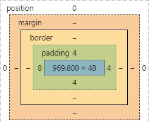

Display
Елементи на сторінці можуть відображатися як блочні, тоді вони зацмають всю ширину сторінки, а можуть як inline — тоді вони влізають в навколишній контент. Наприклад, якщо хочете зробити зображення в тексті, воно мусить бути inline. Є також inline-block категорія. Такі елементи мають всі характеристики блочних, але за замовчуванням не починаються з нового рядка.
Margin
Як вже було сказано, кожен елемент на сторінці відображається як прямокутник, або box. Навколо цього прямокутника є три шари: padding, border, margin.
Margin дозволяє відділити елементи між собою.
Якщо, наприклад, два елементи дотикаються, і треба їх розділити,
достатньо одному з них вказати margin. Якщо вкзати обом,
зіграє роль лише більший з них.
Тобто margin не додається.
Margin, як і дві наступні характеристики елемента,
можна вказувати для всіх сторін одночасно, можна —
для вертикальних і горизонтальних окремо, а можна
окремо для всіх.
Border
Це просто межа, яка оточує елемент. Може бути якого завгодно кольору, товщини і профілю — solid, dashed, dotted, double.
Padding
Padding віддаляє вміст елемента від його країв.
Інструменти розробника
Бразузери мають інструменти розробника — вікно, яке можна відкрити на сторінці і розглянути її в деталях. Одною з корисних особливостей цих інструментів є можливість переглядати описані тут параметри для кожного елемента. Це суттєво полегшує створення сайтів.